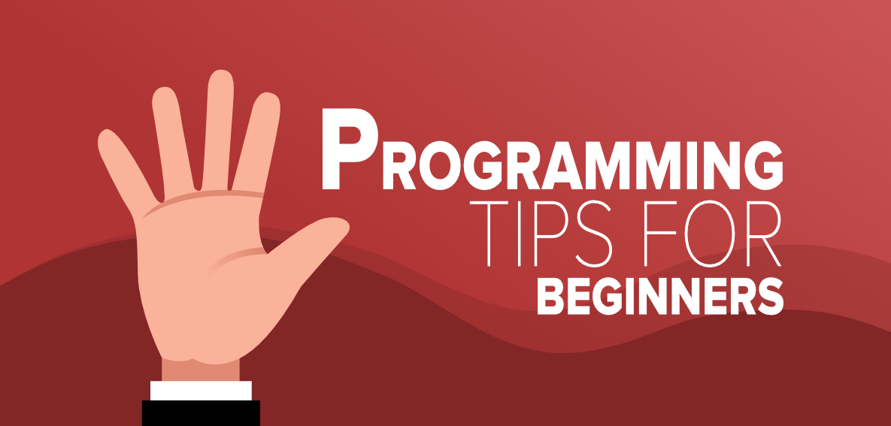

Learning How to Code: a Beginner's Guide
Learning how to code, particularly if you’re a beginner, can be challenging. Use this helpful guide to learn more about what coding is, discover different coding languages, explore the benefits of learning to code, and more.
What is coding?
Coding, also called programming, is a set of instructions given to a computer to perform a desired task. In other words, code allows a human to tell a computer what to do in a way the computer understands. Coding plays a vital role in everyday life because it drives many of the products we use regularly, including calculators, cellphones, laptops, TVs, kitchen appliances, and cars.
Top 10 Programming Tips For Beginners

by Marie Colvin on Apr 21, 2025
1. Google Is Your Best Friend
Seriously. Knowing how to search for answers is just as important as knowing how to code. Stack Overflow, GitHub, and documentation pages will become your go-to tabs. Don’t feel bad for not knowing something—just search it.

2. Start Small, But Keep Building
Start with a to-do list, a calculator, or a simple blog site. The important thing is finishing small projects—it builds your confidence and gives you something to show off (which is gold when job hunting).
3. Your Code Doesn’t Have to Be Perfect
It just needs to work. Seriously. You’ll refactor and clean things up as you go, but don’t get stuck in “perfection paralysis.” Push something that works, even if it’s messy. You’ll learn by doing.
4. Error Messages Aren’t Evil
They’re clues. At first, they’re terrifying, but over time you’ll learn to read them like a story. If it says “undefined,” something’s probably not declared. If it’s a syntax error, check your parentheses. Follow the breadcrumbs.
5. Ask for Help (But Be Specific)
Don't suffer in silence. Ask questions, but make sure to include code snippets, the error message, and what you’ve tried so far. People are way more willing to help when they know you’ve made an effort.
6. Keep Showing Up
Some days you’ll feel like a genius, others like an imposter. That’s normal. The trick is to keep going. Code every day if you can, even for 20 minutes. Progress is progress.
7. Read Other People's Code
Knowledge does not go in vain! It's true that you should practice programming and coding on your own but reading codes by other people is very helpful. People make the common mistake of not reading programs done by someone else as they think that it is something wrong, but it's not true. Reading new things allows you to find solutions to problems that you found tough or were not able to do after many attempts.
Final Thought:
Be kind to yourself. Everyone starts somewhere, and nobody writes perfect code on day one. You're learning a superpower. Give it time. Keep experimenting. And most importantly—have fun with it.
Happy coding!